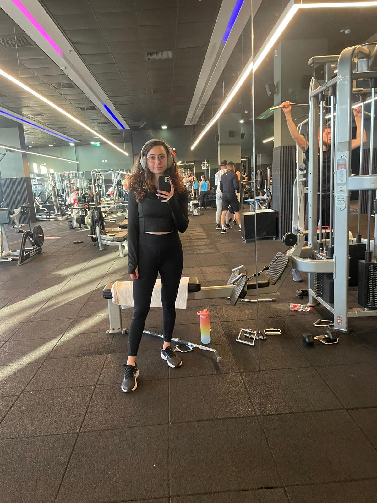

My hobbies:
- I love sun and beach so, one of my favorite hobbies is
swimming
- I also like to go shopping, but does it count as hobby? Idk, you choose.
- Riding horses is one of the best feelings ever, so yeah I love "riding horses" to be one of my hobbies
- take a long walks in woods and nature is not only good for our physical health but to our mental health as
well.
- and ofc because these are my favorite hobbies but I dont usually do them, because I am a developer and
graphic designer so who have the time to do all of this??
- last but not least because i dont really have this much time to do my "hobbies" I go to gym and here is a
photo of me at my favorite place ever.
